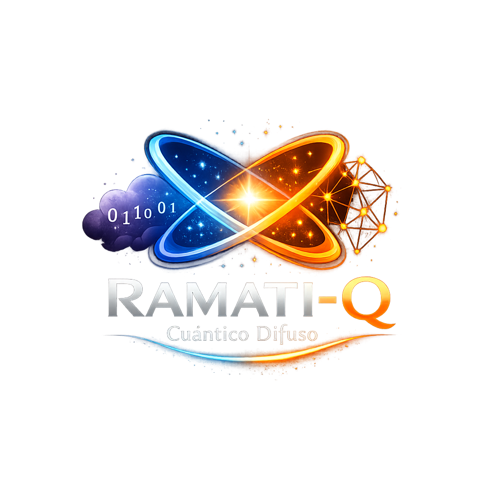

RAMATI-Q
Ramati-Q es el lenguaje nativo para inteligencia cognitiva, robótica autónoma y decisiones complejas bajo incertidumbre.
Rust es la base técnica y de rendimiento, pero Ramati-Q es la marca, la identidad y la experiencia principal del producto.
Lenguaje original
Ramati-Q presenta una sintaxis propia pensada para expresar inteligencia, autonomía y decisiones con claridad en español.
Base técnica sólida
Rust aporta estabilidad y rendimiento, mientras Ramati-Q mantiene la cara pública, la visión y la experiencia del producto.
Motor difuso nativo
Variables, espectros, inferencia y planificación cognitiva forman parte del núcleo del lenguaje sin que la infraestructura opaca la identidad de Ramati-Q.
¿Por qué Ramati-Q?
Porque la innovación no nace repitiendo paradigmas ajenos, sino creando una base propia para decisiones inteligentes, automatización cognitiva y sistemas que responden con criterio en español.
Ramati-Q está hecho para abrir camino, no para copiarlo.
Zona de Descargas Oficiales
Obtenga el compilador soberano de Ramati-Q y comience a ejecutar sus programas de control cognitivo de inmediato.
📖 Manual de Referencia Técnica
Ramati-Q procesa scripts con extensión .rmq orientados a la robótica, la lógica difusa y la programación cognitiva autónoma.
Ejemplo de flujo cognitivo:
# Establecer objetivos y espectros
objetivo 80.0 80.0
espectro distancia_frontal = 1.0
bucle_cognitivo 150 ->
capturar distancia_frontal de sensor_frontal
si_difuso distancia_frontal < 0.5 ->
accionar giro_izquierda con 1.0
fin_si
fin_bucle
Consulte la arquitectura completa del compilador y el pipeline de ejecución en el repositorio oficial para profundizar en cada fase del diseño.
🌐 Comunidad y Ecosistema Soberano
Únase al comité de desarrollo, aporte al núcleo de Ramati-Q y comparta sus experiencias creando sistemas inteligentes con un lenguaje original en español.
🔗 Repositorio oficial: github.com/ITAMAR74IA/Ramati-Q
💬 Canal de ingeniería: foros oficiales de arquitectura cuántico-difusa, discusión técnica y evolución del lenguaje.
🤝 Convocatoria: colaborar en compilación, semántica, módulos, documentación y validación de sistemas cognitivos con enfoque soberano.